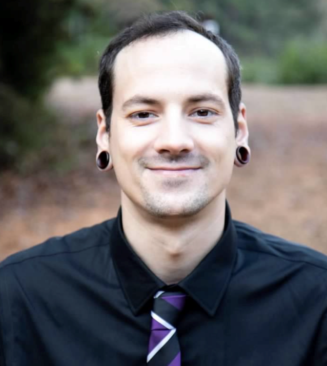

About Me
I was born in Charlotte, North Carolina and when I was 23 I moved to North Dakota for a construction job. I then moved to Boulder, Colorado for a job in information technology and that is where I met my fiancé. We moved back to Charlotte in 2017 to be closer to our families; as we were expecting a daughter of our own. Since moving back, our daughter was born, and I decided to follow my passion in web/software development and programing.
I am currently attending the coding boot camp at UNCC and am projected to finish the program in December 2018.
I am enjoying furthering my knowledge in the IT world and hope to continue to do so upon completion.